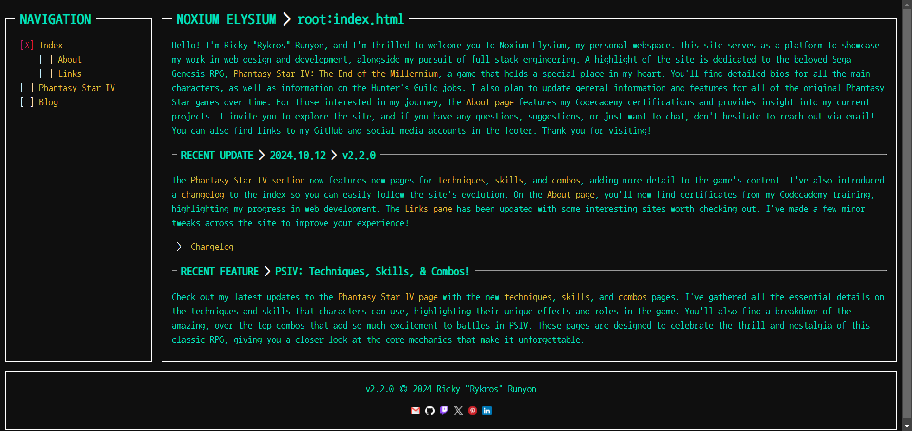
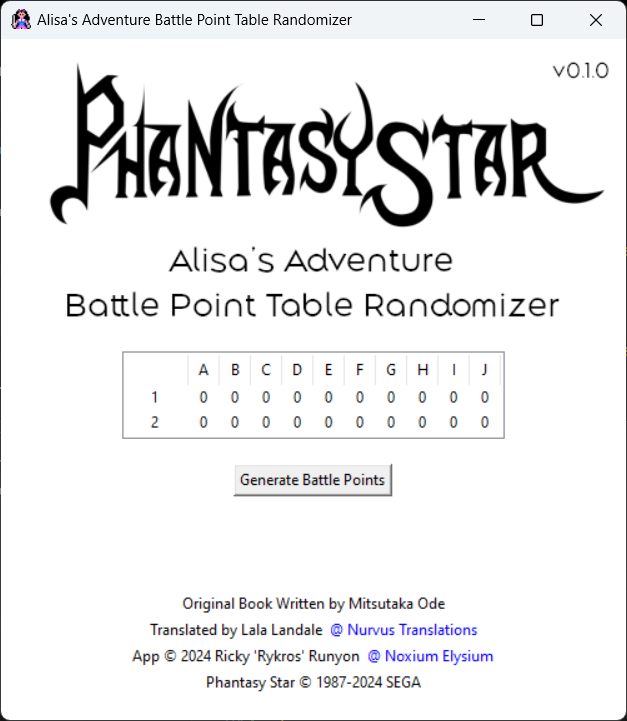

NOXIUM ELYSIUM > root:projects.html
Welcome to my Projects page, where you'll find a collection of my work that showcases my journey in web design, development, and game creation. From web applications built with HTML, CSS, and Python to creative projects inspired by the Phantasy Star series, each project reflects my commitment to learning and innovation. Explore my completed projects as well as those still in progress, and discover how I combine my skills in programming, design, and development to bring ideas to life.
NOXIUM ELYSIUM > Web Design + Development
>_ URL: https://rykros.github.io/Noxium-Elysium/
Noxium Elysium is a comprehensive website project that merges my deep passion for web design and development with my admiration for the classic Phantasy Star series. Built from the ground up using HTML and CSS, the site features a command terminal-inspired aesthetic that creates a unique, immersive experience for visitors. This approach not only pays homage to the retro vibe of the Phantasy Star games but also showcases my creativity and attention to detail in crafting an engaging user interface.
The site incorporates responsive design principles to ensure a seamless experience across various devices, highlighting my skills in adaptive web development. I carefully applied visual styling techniques to give the site a sleek and polished look, with custom CSS that mimics the appearance of a shell or Linux terminal, adding a nostalgic yet modern twist to the user interaction.
Through strategic content organization, Noxium Elysium serves as both a tribute to the iconic series and a professional portfolio that demonstrates my expertise in front-end development. This project allowed me to blend my technical skills with my artistic vision, resulting in a platform that reflects both my enthusiasm for the Phantasy Star universe and my capabilities as a web designer and developer.
ALISA'S ADVENTURE BATTLE POINT TABLE RANDOMIZER > Python Application
Alisa's Adventure Battle Point Table Randomizer is a Python-based application designed to enhance the interactive experience of the Phantasy Star: Alisa's Adventure book, which is inspired by Phantasy Star I for the Sega Master System. This adventure book guides readers through a captivating narrative where their choices influence the story's direction, and this tool adds an extra layer of unpredictability and excitement to those choices.
Using Python's tkinter library, I've developed a user-friendly interface that dynamically generates random battle point tables for each encounter in the book. This feature allows readers to experience new twists and challenges on every playthrough, ensuring that no two adventures are ever the same. By incorporating these randomly generated battle scenarios, the tool brings a sense of spontaneity and tactical decision-making to the interactive story, reflecting the essence of the original Phantasy Star gameplay.
The application requires Python to be installed on your system, making it a versatile tool for those familiar with Python-based projects. Through this project, I showcase my skills in Python programming, algorithm design, and UI development. This endeavor also reflects my dedication to preserving the legacy of the Phantasy Star series by breathing new life into its universe through innovative tools and engaging user experiences.